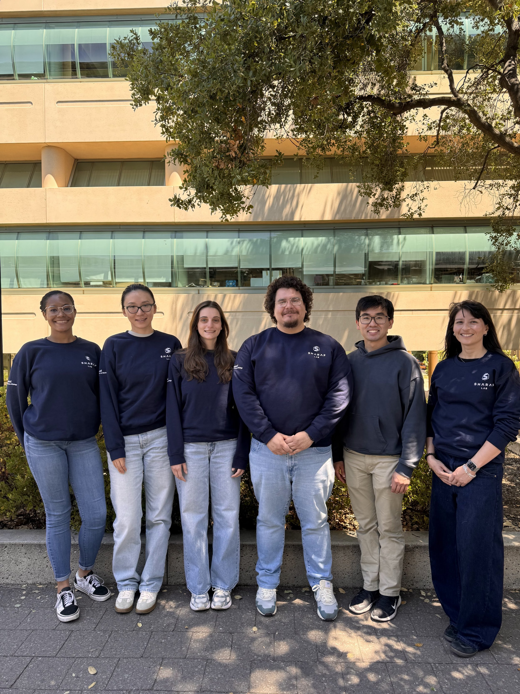

Welcome to the Sharaf Lab!
Our lab uses biophysical tools to characterize the structure and function of bacterial proteins, including membrane proteins and lipoproteins. Our goal is to obtain a deep understanding of bacterial physiology and to translate this research into therapeutics. Research in the Sharaf Lab bridges multiple fields including biochemistry, biology, microbiology, and immunology.
Explore Research Join the Lab